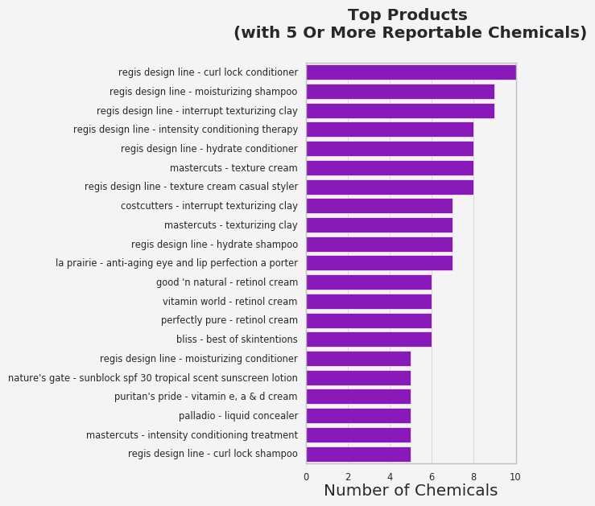
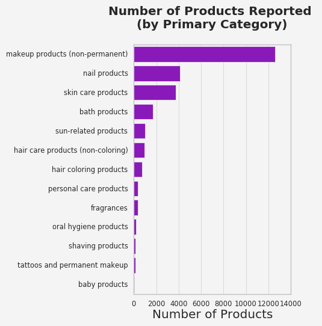
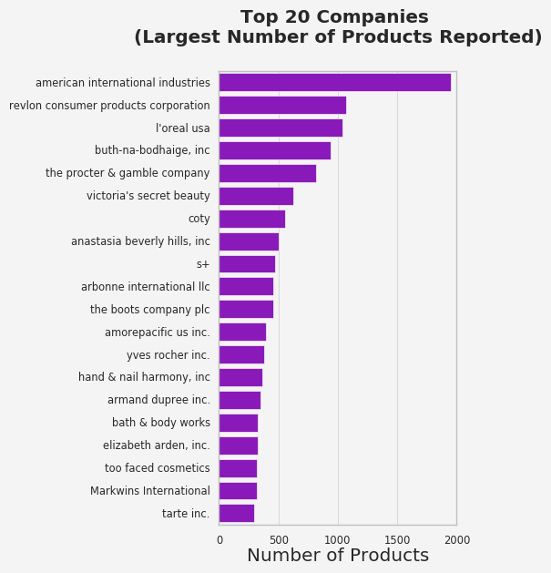
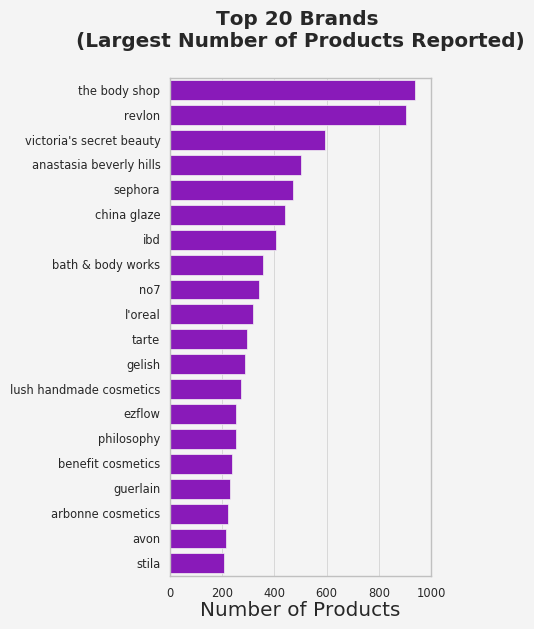

"Toxic Beauty": Chemicals in Cosmetics
March 15, 2017
How many different beauty products do you apply onto your face and body everyday? How many chemical ingredients do they contain? And how many of those chemicals have potential health risks?
I admit that I have been a little careless when it comes to the safety of my cosmetic products. Then one day I came across this dataset from California Safe Cosmetics Program in California Department of Public Health. It appears that companies (manufacturer, packer, and/or distributor named on the product label) must submit a list of all products that contain any ingredients known or suspected to cause cancer, birth defects, or other developmental or reproductive harm if the company has annual aggregate sales of cosmetic products of one million dollars or more, and has sold cosmetic products in California on or after January 1, 2007. So I started to dig into this dataset because I was very curious about what exactly were reported. Let me walk you through what I did. All codes are available in my Github Repository.
Data Cleaning
Missing Data
The dataset has 80,004 rows and 22 columns. We can visualize columns containing missing data using a heatmap.

We can see that the majority of the rows in the 'DiscontinuedDate' and 'ChemicalDateRemoved' columns are missing. 'CSFId' and 'CSF' also contains a lot of missing data, followed by 'CASNumber' and 'BrandName'. We know that typical ways of dealing with missing data include a. deleting rows/columns with missing values and b. filling the missing values with some value. The first approach is the easist but caution needs to be taken because we can potentially lose some important information. In our case, the 'DiscontinuedDate' and 'ChemicalDateRemoved' columns give information about product discontinuation or reformulation. So here they are probably just not applicable (products still on sale and no reformulation has been done). We can leave them as they are. For the missing 'CSFId', 'CSF' and 'CasId', I do not have enough knowledge to fill in these values but I do not want to lose records by deleting corresponding rows. So again, let’s leave them as they are. 'BrandName' is actually something interesting. We can try to fill in the missing values using information given in the dataset, e.g., 'CompanyName'.

These products with a missing 'BrandName' actually come from 6 companies and two of them are cosmetic companies. Based on a quick googling, they each carries one brand only (brand name is the same as the company name). So we can simply fill in the brand names for products from these two companies. In the remaining companies, two of them (Fisk Industries Inc. and Atlas Development Limited) only have a small number of records. So it is reasonable to look at them individually and fill in the missing brand names based on the brands they carry. For the remaining records, they can actually be filled with “Unknown” for simplicity.
Duplicates and Unique Values
The other problem a public dataset might have is duplicates. Note that before checking duplicates, the inconsistent format of string values (upper and lower cases are mixed) is corrected. 251 duplicated rows are found. Further inspection of these rows does not show any connection or anything in common. So they are simply dropped.
The unique number of values for several columns are listed below:
- Unique number of
'CDPHId': 26,036 - Unique number of
'CompanyName': 508 - Unique number of
'BrandName': 1,820 - Unique number of
'ProductName': 23,992 - Unique number of
'PrimaryCategory': 13 - Unique number of
'SubCategory'‘: 89 - Unique number of
'ChemicalName': 110
Further inspection of the dataset shows that 'CDPHId' represents unique product. So the difference between number of 'ProductName' and 'CDPHId' indicates that there are products with the same name. We can actually generate a seperate dataframe storing the basic information ('CDPHId', 'CompanyName', 'BrandName', 'ProductName') of unique products.
Data Visualization
There are several questions I am interested in. For example:
1. What are the most common reportable chemicals?
2. Which products have the largest number of reportable chemicals?
3. Which categories of products are reported most frequently?
4. Which companies/brands have the largest number of products reported?
Most common reportable chemicals
The dataset is grouped by 'ChemicalName' and the number of unique 'CDPHId' is counted.

Looks like titanium dioxide is contained in the majority of the products reported. The exact harm of titanium dioxide is not well understood. It is generally considered to be a relatively inert, safe material, but when it is in the form of nanoparticles, some believe that it can penetrate the skin and cause potential health risk. Currently, only airborne, unbound titanium dioxide particle of respirable size is officially listed in California Proposition 65.
All other chemicals are contained in much smaller number of products. The health risks for some of them are also controversial. FDA actually only takes legal action against cosmetic companies if there is enough evidence of a safety problem for consumers.
Products with the largest number of reportable chemicals
First, let’s look at some statistics about the number of reportable chemicals in the products:
- Minimum number of reportable chemicals in any product: 1
- Maximum number of reportable chemicals in any product: 10
- Median number of reportable chemicals in all product: 1.0
- Mean number of reportable chemicals in all product: 1.0970579198033492
- Standard deviation of the number of reportable chemicals in all product: 0.3771734727730194
Looks like the majority of products in the dataset only contains one reportable chemical (highly likely to be titanium dioxide), but there are also products contain more than one reportable chemicals. What are they?

A lot of them are hair and skin care products!
Categories of products reported most frequently
Similarly, we can group the dataset by 'PrimaryCategory' and count the number of unique products.

Makeup products is No. 1. This is not surprising because most of them contain chemicals like titanium dioxide, mica, talc, etc.
Companies/Brands with the largest number of products reported
Another thing to look at is which companies/brands have the largest number of products reported. Again, simply group the data by 'CompanyName' or 'BrandName' and count the number of unique products.


Summary
- The potential risks of a lot of the chemicals are actually controversial and FDA does not take legal action against cosmetic companies unless there is enough evidence. So it is really up to us to decide whether we want to avoid some ingredients or not.
- Compared to products with only one chemical reported like titanium dioxide (commonly used in sunscreens and makeups; probably hard to avoid), we should probably be more cautious about products containing several different kinds of potentially dangerous chemicals.
- According to the dataset, makeup is the No.1 category with the most products reported to have potentially dangerous chemicals and baby products seem to be the “safest”. The former is not surprising to most of us and the latter is reassuring!
Note: the dataset maynot include all products containing carcinogens or developmental or reproductive toxicants due to companies failing to report.